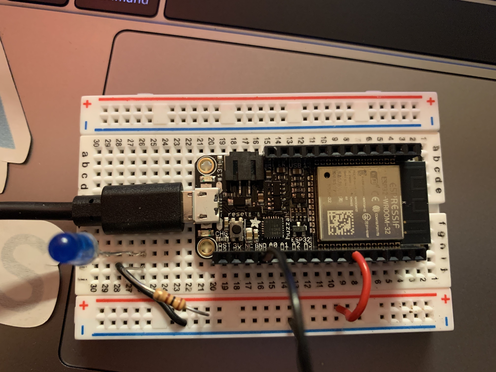
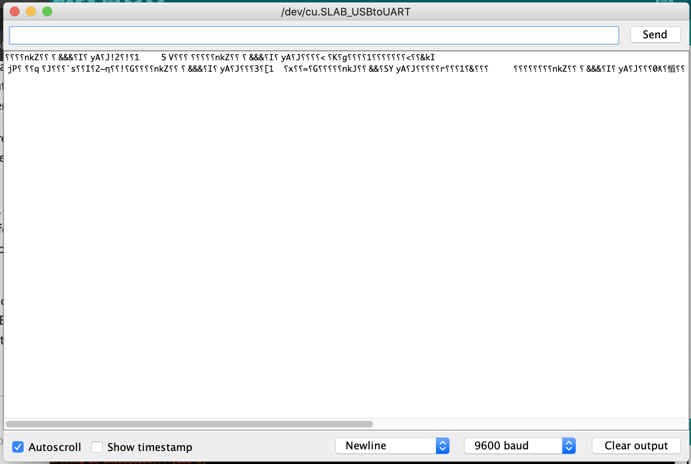
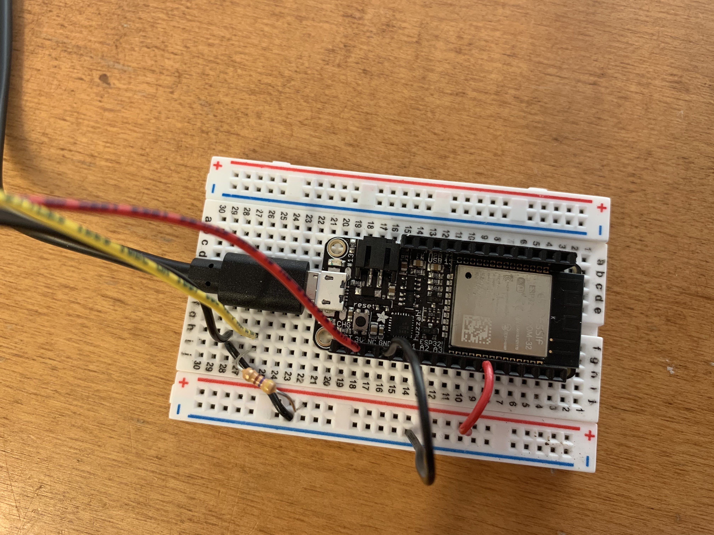
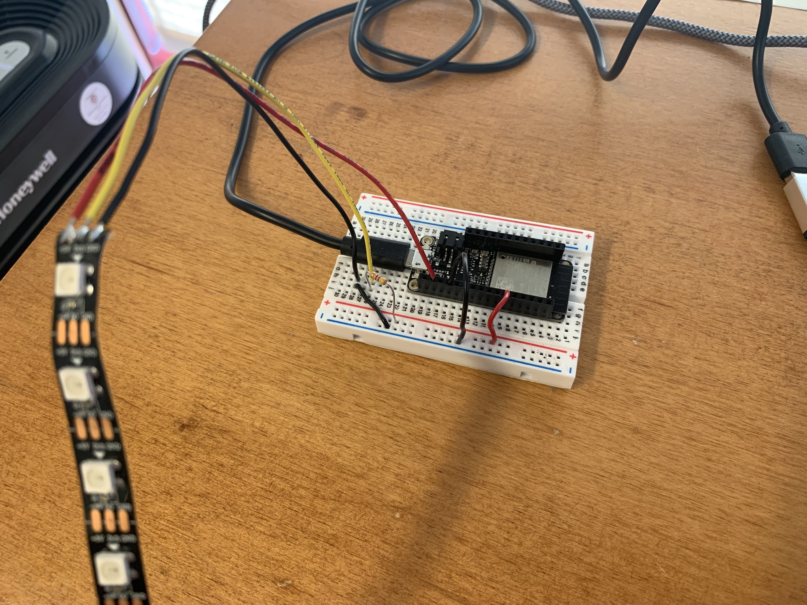

This week we’re exploring WiFi and Bluetooth! Since I didn’t want to deal with connecting a device to the Harvard University or Harvard Secure Internet, I decided to follow this tutorial to learn how to turn an LED on and off using Bluetooth Low Energy (BLE). To follow the tutorial, I used an LED, an 100 ohm resistor, two black wires and one red wire, the Huzzah board and a smartphone.
I connected the negative side of the LED to GND on the HUZZAH and the SCK pin (pin 5 in the code) on the Huzzah to the 100 ohm resistor and the resistor to the positive side of the LED.
First I downloaded an app to connect to the Huzzah over Bluetooth. I used the BLE Scanner app by Bluepixel Technologies.
I then had to configure the Arduino IDE to work with the Huzzah.
I downloaded and installed the CP2104 USB Driver.
Afterwards, I added this to Preferences > Additional Boards Manager URLs:
https://raw.githubusercontent.com/espressif/arduino-esp32/gh-pages/package_esp32_index.json.
Finally, under Tools > Boards Manager, I added the "esp32" boards package.
I selected Adafruit ESP32 Feather as the board, but was confused by the ports:
After some trial and error, I ended up using the /dev/cu.SLAB_USBtoUART port.
After installing the necessary libraries, I opened the BLE_write example found in File > Examples > ESP32 BLE Arduino and modified it according to the tutorial to be able to turn on an LED from the phone app. See the code here:
/*
Based on Neil Kolban example for IDF: https://github.com/nkolban/esp32-snippets/blob/master/cpp_utils/tests/BLE%20Tests/SampleWrite.cpp
Ported to Arduino ESP32 by Evandro Copercini
*/
#include
#include
#include
// See the following for generating UUIDs:
// https://www.uuidgenerator.net/
#define SERVICE_UUID "4fafc201-1fb5-459e-8fcc-c5c9c331914b"
#define CHARACTERISTIC_UUID "beb5483e-36e1-4688-b7f5-ea07361b26a8"
int LED_PIN = 5;
char LED_STATUS;
class MyCallbacks: public BLECharacteristicCallbacks {
void onWrite(BLECharacteristic *pCharacteristic) {
std::string value = pCharacteristic->getValue();
if (value.length() > 0) {
for (int i = 0; i < value.length(); i++){
LED_STATUS = value[i];
}
}
}
};
void setup() {
Serial.begin(115200);
BLEDevice::init("MyESP32");
BLEServer *pServer = BLEDevice::createServer();
BLEService *pService = pServer->createService(SERVICE_UUID);
BLECharacteristic *pCharacteristic = pService->createCharacteristic(
CHARACTERISTIC_UUID,
BLECharacteristic::PROPERTY_READ |
BLECharacteristic::PROPERTY_WRITE
);
pCharacteristic->setCallbacks(new MyCallbacks());
pCharacteristic->setValue("Hello World");
pService->start();
BLEAdvertising *pAdvertising = pServer->getAdvertising();
pAdvertising->start();
pinMode(LED_PIN, OUTPUT);
digitalWrite(LED_PIN, LOW);
}
void loop() {
int val = (int)LED_STATUS; // cast the char* as an int
if (val == 49) // ASCII code for the number 1
digitalWrite(LED_PIN, HIGH);
else
digitalWrite(LED_PIN, LOW);
delay(2000);
}
The code uploaded fine once I selected Adafruit ESP32 Feather as the board and /dev/cu.SLAB_USBtoUART as the corresponding port, but I was confused by what I saw once I opened the Serial Monitor.
UPDATE: Avoid errors like these by selecting 115200 as the baud rate in the Serial Monitor.
I decided to keep going with connecting the Huzzah to the app anyway. I had to search through a bunch of devices until I found MyESP32. After connecting, I went to CUSTOM SERVICE, Write,Read, then pressed Write Value. To work with the code, I clicked Text then entered ‘1’ as the value, then pressed Write. The LED turns on!! Super cool!! If I do the same thing but write ‘0’ this time, the LED turns off.
This tutorial was also helpful in understanding the Bluetooth hookup. However, the tutorial showed me that while my Huzzah seems to be registering the values and reacting accordingly, it doesn’t look like the Serial Monitor is doing what I want it to do, which would be important to figure out if I needed to debug my devices in the future.
I then tried wiring the LED strip to see if I could control it over BLE. I switched out the 100 ohm resistor with a 470 ohm resistor, wired GND on the strip to GND, Din after the 470ohm resistor connecting to the SCK pin on the Huzzah, and connected power to 3V on the Huzzah.
 I then copied the code I used previously and looked at this tutorial for code to use the RGB LED strip. I decided to write code that would make on of the LEDs on the strip turn on depending on what number 0-9 someone wrote using the BLE Scanner app. See the code here:
/*
Based on Neil Kolban example for IDF: https://github.com/nkolban/esp32-snippets/blob/master/cpp_utils/tests/BLE%20Tests/SampleWrite.cpp
Ported to Arduino ESP32 by Evandro Copercini
*/
#include
#include
#include
#include
#define LED_PIN 5
#define NUMPIXELS 10
#define DELAYVAL 500 // Time (in milliseconds) to pause between pixels
Adafruit_NeoPixel strip(NUMPIXELS, LED_PIN, NEO_GRB + NEO_KHZ800);
// See the following for generating UUIDs:
// https://www.uuidgenerator.net/
#define SERVICE_UUID "4fafc201-1fb5-459e-8fcc-c5c9c331914b"
#define CHARACTERISTIC_UUID "beb5483e-36e1-4688-b7f5-ea07361b26a8"
char LED_STATUS;
class MyCallbacks: public BLECharacteristicCallbacks {
void onWrite(BLECharacteristic *pCharacteristic) {
std::string value = pCharacteristic->getValue();
if (value.length() > 0) {
for (int i = 0; i < value.length(); i++){
LED_STATUS = value[i];
}
}
}
};
void setup() {
Serial.begin(115200);
BLEDevice::init("MyESP32");
BLEServer *pServer = BLEDevice::createServer();
BLEService *pService = pServer->createService(SERVICE_UUID);
BLECharacteristic *pCharacteristic = pService->createCharacteristic(
CHARACTERISTIC_UUID,
BLECharacteristic::PROPERTY_READ |
BLECharacteristic::PROPERTY_WRITE
);
pCharacteristic->setCallbacks(new MyCallbacks());
pCharacteristic->setValue("Hello World");
pService->start();
BLEAdvertising *pAdvertising = pServer->getAdvertising();
pAdvertising->start();
strip.begin(); // INITIALIZE NeoPixel strip object (REQUIRED)
strip.show(); // Turn OFF all pixels ASAP
strip.setBrightness(10); // Set BRIGHTNESS low to reduce draw (max = 255)
}
void loop() {
strip.clear(); // Set all pixel colors to 'off'
int val = (int)LED_STATUS; // cast the char* as an int
if (val == 48) { // ASCII code for the number 0
strip.setPixelColor(0, strip.Color(0, 150, 0));
strip.show(); // Send the updated pixel colors to the hardware.
}
else if (val == 49) { // ASCII code for the number 1
strip.setPixelColor(1, strip.Color(0, 150, 0));
strip.show(); // Send the updated pixel colors to the hardware.
}
else if (val == 50) { // ASCII code for the number 2
strip.setPixelColor(2, strip.Color(0, 150, 0));
strip.show(); // Send the updated pixel colors to the hardware.
}
else if (val == 51) { // ASCII code for the number 3
strip.setPixelColor(3, strip.Color(0, 150, 0));
strip.show(); // Send the updated pixel colors to the hardware.
}
else if (val == 52) { // ASCII code for the number 4
strip.setPixelColor(4, strip.Color(0, 150, 0));
strip.show(); // Send the updated pixel colors to the hardware.
}
else if (val == 53) { // ASCII code for the number 5
strip.setPixelColor(5, strip.Color(0, 150, 0));
strip.show(); // Send the updated pixel colors to the hardware.
}
else if (val == 54) { // ASCII code for the number 6
strip.setPixelColor(6, strip.Color(0, 150, 0));
strip.show(); // Send the updated pixel colors to the hardware.
}
else if (val == 55) { // ASCII code for the number 7
strip.setPixelColor(7, strip.Color(0, 150, 0));
strip.show(); // Send the updated pixel colors to the hardware.
}
else if (val == 56) { // ASCII code for the number 8
strip.setPixelColor(8, strip.Color(0, 150, 0));
strip.show(); // Send the updated pixel colors to the hardware.
}
else if (val == 57) { // ASCII code for the number 9
strip.setPixelColor(9, strip.Color(0, 150, 0));
strip.show(); // Send the updated pixel colors to the hardware.
}
delay(2000);
}
Here’s a video of me using the BLE Scanner app with the Huzzah and RGB LED Strip!
For a future project idea, I’m curious about if I’m able to connect the display board to the Huzzah so that someone could use the BLE Scanner app to write whatever they wanted on the display.